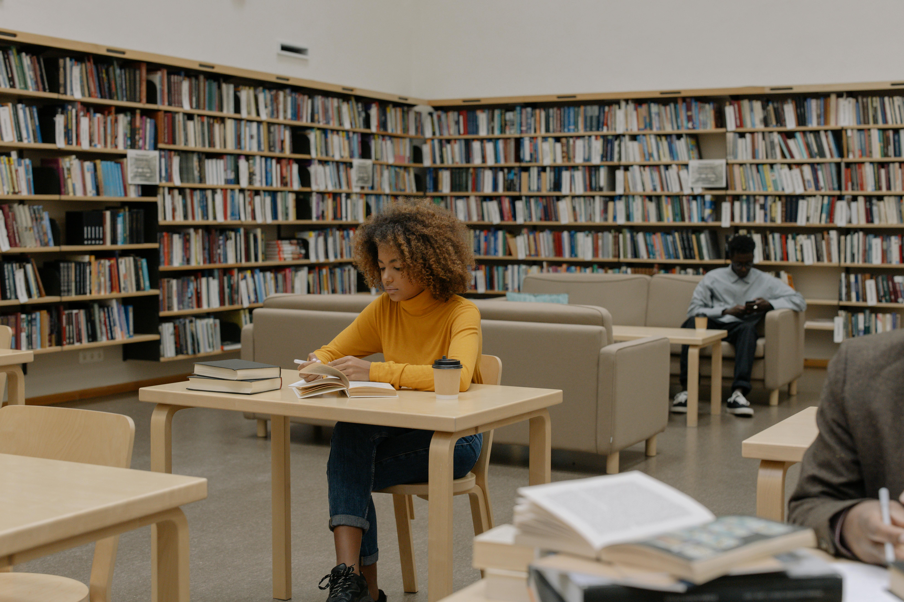

Early Years
Lower Primary
PP1 - Grade 3
Playful lessons, phonics, storytelling, and hands-on activities make early learning joyful and full of discovery.
- Reading & writing
- Math games
- Creative arts
Nurturing young minds for academic excellence and good character thus empowering future leaders. Our mission is to see the pupils transformed in every aspects of their lives.
We combine rigorous academics with a supportive community to empower students to reach their full potential and lead with confidence.
Our comprehensive curriculum focuses on critical thinking, innovative problem-solving, and practical skills that prepare students for future global success.
Learn from dedicated educators who hold advanced degrees and bring real-world expertise, mentorship, and passion into every classroom.
Discover diverse sports, arts, and club programs designed to build leadership, teamwork, and personal growth outside the traditional classroom.
Access cutting-edge modern classrooms, interactive learning management platforms, and up-to-date digital tools from anywhere.
Study in safe, state-of-the-art laboratory spaces, extensive libraries, and modern creative hubs designed for immersive learning.
Connect with a massive global network of successful professionals offering active mentorship, career guidance, and networking.
Happy Students
Monthly Visitors
Counties in Kenya
Top Partners
Learning that feels exciting
Each stage at Stars Academy blends strong academics, care, and creativity so every learner can grow in confidence, curiosity, and character.
Early Years
PP1 - Grade 3
Playful lessons, phonics, storytelling, and hands-on activities make early learning joyful and full of discovery.

Middle Years
Grade 4 - Grade 6
Students build stronger problem-solving skills through practical lessons, teamwork, and digital learning tools.
Future Ready
Grade 7 - Grade 9
Our junior learners explore advanced subjects, research, and communication skills that prepare them for the next chapter.
We provide a vibrant learning environment where learners discover their talents, build friendships, and develop important life skills.

Learners participate in football, athletics, volleyball and other sports that promote teamwork and fitness.

Our well-equipped library encourages reading culture and independent learning.

Pupils gain digital literacy skills through practical computer lessons.

Learners express creativity through performances, singing and drama festivals.

Swimming provides a full-body workout that improves cardiovascular endurance, strength, and overall physical fitness

Pupils learn responsibility through tree planting and environmental conservation.